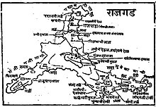

राजगड हा भारताच्या महाराष्ट्र राज्यातील एक किल्ला आहे. राजगड किल्ल्यावर
छत्रपती शिवाजी महाराज यांच्या मराठी राज्याची पहिली राजधानी होती. पुणे
शहराच्या नैर्ऋत्येला ४८ कि. मी. अंतरावर आणि पुणे जिल्ह्यातील भोर गावाच्या
वायव्येला २४ कि.मी. अंतरावर नीरा-वेळवंडी-कानंदी आणि गुंजवणी या नद्यांच्या
खोऱ्यांच्या बेचक्यात मुरुंबदेवाचा डोंगर उभा आहे. मावळ भागामध्ये
राज्यविस्तार साध्य करण्यासाठी राजगड आणि तोरणा हे दोन्ही किल्ले मोक्याच्या
ठिकाणी होते. तोरणा किल्ल्याचा बालेकिल्ला आकाराने लहान असल्यामुळे राजकीय
केंद्र म्हणून हा किल्ला सोयीचा नव्हता. त्यामानाने राजगड दुर्गम असून त्याचा
बालेकिल्ला बराच मोठा आहे. शिवाय राजगडाकडे कोणत्याही बाजूने येताना एखादी
टेकडी किंवा नदी ओलांडावीच लागते. एवढी सुरक्षितता होती,म्हणून आपले राजकीय
केंद्र म्हणून शिवाजी महाराजांनी राजगडाची निवड केली. राजगडाला तीन माच्या व
एक बालेकिल्ला आहे. राजगडचा बालेकिल्ला खूप उंच असून त्याची
समुद्रसपाटीपासूनची उंची १३९४ मीटर आहे. दुर्गराज राजगड त्यांच्या
महत्त्वाकांक्षेची उंची दाखवतो, तर किल्ले रायगड हा शिवाजी महाराजांच्या
कर्तृत्वाचा विस्तार दाखवतो. राजगडाच्या मध्यवर्ती ठिकाणी उंच डोंगर तासून
तयार केलेला बालेकिल्ला म्हणजे पृथ्वीने स्वर्गावर केलेली स्वारी होय.
इतिहास - राजगड किल्ला इसवी सनाच्या पहिल्या शतकातला आहे. या मुरूंबदेवाच्या
डोंगराला किल्ल्याचे स्वरूप गौतमीपुत्र सातकर्णी म्हणजेच शालिवाहन राजा ज्याने
युद्धात शकांना हारवून इ.स ७८ साली स्वतःच्या नावाचं शक सुरू केले, यानेच आठ
वर्षांपूर्वी इ.स ७० साली ह्या मुरूंबदेवाच्या डोंगरावर सुंदर असा व उंचपुरा
राजगड किल्ला बांधला. बहुधा सन १६४५ मध्ये शिवाजी महाराजांनी हा किल्ला ताब्यात
घेऊन त्यावर बांधकाम केले व त्याचे नाव राजगड ठेवले. मराठेशाहीची २५ वर्षे
राजधानी याव्यतिरिक्त सदर किल्ल्यावर शिवाजीमहाराजांनाचे धाकटे चिरंजीव
राजारामाचा जन्म व सईबाईंचे निधन या महत्त्वाच्या घटना घडल्या आहेत. राजगड हे
शिवाजी महाराजांचे पहिले प्रमुख राजकीय केंद्र असून, हा बुलंद, बेलाग आणि बळकट
राजगड आजही आपल्याला हिंदवी स्वराज्याची ग्वाही देत उभा आहे. नंतर
राज्यकारभारासाठी गडावरची जागा अपुरी पडू लागल्याने राजांनी राजधानी त्यामानाने
ऐसपैस आणि दुर्गम अशा रायगडावर नेली.१) 'राजगड आणि तोरणा हे दोन्ही किल्ले
उभ्या स्वरूपाचे असून अशा ठिकाणी वसले आहेत की मावळयांचे नेते छत्रपती
शिवाजीराजे भेासले यांना राज्यविस्तारासाठी या किल्ल्यांचा भरपूर उपयोग झाला.'
-जेम्स डग्लस(बुक ऑफ बॉम्बे) २) साकी मुस्तैदखान त्याच्या मासिरे आलिमगिरे
नावाच्या ग्रंथात म्हणतो- 'राजगड हा अतिशय उंच. त्याची उंची पाहता सर्व
किल्ल्यात तो श्रेष्ठ होय असे म्हणता येईल. त्याचा घेर १२ कोसांचा आहे (१ कोस =
३.२ कि.मी ). त्याच्या मजबूतीची तर कल्पनाही करवत नव्हती. डोंगराच्या
दऱ्याखोऱ्यातून आणि घनघोर अरण्यातून वाऱ्याशिवाय दुसरे काही फिरकू शकत नाही.
येथे पावसालाच फक्त वाट मिळू शकते. इतर कोणीही त्यातून जाऊ शकत नाही.' ३) महेमद
हाशीम खालीखान हा 'मुन्तखबुललुबाब-ए-महेमदॉशाही ' नामक ग्रंथामध्ये म्हणतो,
'राजगड किल्ल्याचे मी कसे वर्णन करु? काय त्या किल्ल्याची उंची, काय त्याचा
विस्तार ! जणू काही आकाशच पसरले होते. त्याचे टोक पाहून छाती दडपे. त्याच्या
भाराने पृथ्वी धारण करणारा पाताळातील वृषभ ओरडत असावा. त्या भागात सापांचा
सुळसुळाट होता. जिकडे तिकडे निरनिराळ्या प्रकारचे हिंस्त्र पशू दिसत. त्यामुळे
सगळे त्रस्त होऊन गेले. राजगड किल्ला म्हणजे डोंगराची रांग त्याचा घेर बारा
कोसांचा त्याला सगळीकडून वेढा घालणे कठीण होते.सातवाहनपूर्व म्हणजे साधारण २०००
वर्षा पूर्वीपासून हा डोंगर प्रसिद्ध आहे, असे इतिहासातून अस्पष्ट येणाऱ्या
उल्लेखांवरून वाटते. एका ब्रम्हर्षी ऋषींचे येथे असणारे वास्तव्य व याच
ब्रम्हर्षी ऋषींच्या नावावरून येथे स्थापन झालेले श्री ब्रम्हर्षी देवस्थान
यावरून डोंगर फार पुरातन काळापासून ज्ञात असावा. राजगडाचे पूर्वीचे नाव होते
मुरंबदेव. हा किल्ला बहामनी राजवटीमध्ये याच नावाने ओळखला जात असे. अर्थात
त्यावेळी गडाचे स्वरूप फार काही भव्य दिव्य असे नव्हते.

इ. स. १४९० च्या सुमारास अहमदनगरच्या निजामशाहीचा संस्थापक अहमद बहिरी याने
बालेघाट आणि तळकोकणातील अनेक किल्ले जिंकून पश्चिम महाराष्ट्रात प्रभाव
निर्माण केला आणि याच वेळी त्याने मुरुंबदेव किल्ला हस्तगत केला.
मुरुंबदेवाचे गडकरी बिनाशर्त शरण आल्यामुळे अहमद बहिरीला किल्ला जिंकण्यास
विशेष प्रयत्न करावे लागले नाही. पुढे किल्ल्यावर निजामशाहीची सत्ता
प्रस्थापित झाल्यावर १२५ वर्षे किल्ल्यावर कोणाचाही हल्ला झाला नाही. इ. स.
१६२५ च्या सुमारास मुरुंबदेव किल्ला, निजामशाहीकडून आदिलशाहीकडे आला.
निजामशहाच्या वतीने बाजी हैबतराव शिळीमकर व त्याचे वडीलरुद्राजी नाईक या
किल्ल्याची व्यवस्था पाहत होते. मलिक अंबरच्या आदेशानुसार बाजी हैबतरावाने
मुरुंबदेवाचा ताबा आदिलशाही सरदार हैबतखानाकडे दिला. १६३० च्या सुमारास हा
किल्ला आदिलशहाकडून परत निजामशाहीत दाखल झाला. शहाजीराजांचा अधिकारी सोनाजी
या किल्ल्याचा कारभार पाहू लागला. विजापूर आदिलशाही सैन्याच्या एका तुकडीने
किल्ल्यावर हल्ला केला. त्यात सोनाजी जखमी झाला. म्हणून बाळाजी नाईक शिळीमकर
आपल्या तुकडीसह मुरुंबदेवाच्या रक्षणार्थ धावून गेला. तेव्हा बाळाजी नाईक
जखमी झाला. या कामगिरीबद्दल शहाजीराजांनी बाळाजी नाईक शिळीमकरांचा नंतर
सन्मानही केला.शिवाजी महाराजांनी मुरुंबदेवाचा किल्ला कधी घेतला याचा लिखित
पुरावा आज मात्र उपलब्ध नाही. त्यामुळे किल्ला ताब्यात कधी आला हे सांगणे
अनिश्चितच आहे. शिवचरित्र साहित्य खंडाच्या दहाव्या खंडात प्रसिद्ध झालले एक
वृत्त सांगते की, 'शिवाजीने शहामृग नावाचा पर्वत ताब्यात घेऊन त्यावर इमारत
बांधली.' सभासद बखर म्हणते की, 'मुराबाद म्हणून डोंगर होता त्यास वसविले.
त्याचे नाव राजगड म्हणून ठेविले. त्या गडाच्या चार माच्या वसविल्या. बखरकार
सभासदाने बालेकिल्ल्याला सुद्धा एक माची म्हणून गणले आहे.' मात्र शिवाजीने
तोरण्यापाठोपाठ हा डोंगर जिंकून घेतला, हे नक्की. डोंगरावर किल्ला बांधण्याचे
काम महाराजांनी मोठा झपाट्याने केले. त्या डोंगरास तीन सोंडा किंवा माच्या
होत्या त्यांसही तटबंदी केली. मुख्य किल्ल्यास राजगड नाव ठेवून एक इमारत उभी
केली. तीन माच्यांना सुवेळा, संजीवनी आणि पद्मावती ही नावे दिली. शिरवळ नजीक
खेडबारे नावाचा गाव होता तेथे रान फार होते त्या ठिकाणी फर्माशी आंब्याची
झाडे लावून पेठ वसविली व तिचे नाव शिवापूर असे ठेवले. इसवी सन १६६० मध्ये
औरंगजेबाच्या आज्ञेनुसार शाहिस्तेखानाने शिवाजी महाराजांच्या प्रदेशावर
स्वारी केली. फारसी साधनांमधून अशी माहिती मिळते की शाहिस्तेखानाने राजगडाकडे
फौज पाठविलेली होती ह्या फौजेने राजगडाच्या जवळपासची काही खेडी जाळून
उद्ध्वस्त केली परंतु प्रत्यक्ष राजगड किल्ला जिकंण्याचा प्रयत्न मात्र केला
नाही ६ एप्रिल १६६३ रोजी शाहिस्तेखानावर छापा घालून शिवाजी महाराज राजगडावर
परतले. सन १६६५ मध्ये मिर्झाराजे जयसिंग याने शिवाजी महाराजांच्या प्रदेशावर
स्वारी केली. दाऊदखान आणि रायसिंग या दोन सरदारांना त्याने या परिसरातील
किल्ले जिंकण्यासाठी पाठविले. ३० एप्रिल १६६५ रोजी मोगल सैन्याने राजगडावर
चाल केली. परंतु मराठ्यांनी किल्ल्यावरून विलक्षण मारा केल्यामुळे मोगलांना
माघार घ्यावी लागली. शिवाजी महाराजांनी जयसिंगाबरोबर तह करताना २३ किल्ले
देण्याचे मान्य केले व स्वतःकडे १२ किल्ले ठेवले. या १२ किल्ल्यांमध्ये
राजगड, तोरणा, लिंगाणा, रायगड यांचा समावेश होतो सभासद बखरीतील उल्लेख खालील
प्रमाणे आहे' सत्तावीस किल्ले तांब्रास दिले. निशाणे चढविली. वरकड राजगड व
कोट मोरोपंत पेशवे, निळोपंत मुजुमदार व सरनोबत नेताजी पालकरअसे मातुश्रींच्या
हवाली केले व आपणही दिल्लीस जावे, बादशाहाची भेट घ्यावी असा करार
केला.'शिवाजी महाराज आग्ऱ्याहून निसटून निवडक लोकांनिशी १२ सप्टेंबर १६६६ला
राजगडाला सुखरूप पोचले. २४ फेब्रुवारी १६७० रोजी राजगडावर राजारामाचा जन्म
झाला. सिंहगड किल्ला घेण्यासाठी शिवाजी महाराजांनी तानाजी मालुसरे यास
राजगडावरूनच १६७० मध्ये पाठविले. सन १६७१-१६७२ मध्ये शिवाजी महाराजांनी रायगड
हे स्थान राजधानीसाठी निश्चित केले, त्याआधी रायगड किल्ल्याचे इ.स १६५६ ते
१६७० पर्यंत स्वराज्याचे वास्तुशास्त्रज्ञ हिरोजी इंदळकर यांच्या देखरेखीखाली
१४ वर्षे बांधकाम चालू होते. त्यानंतर राजधानी राजगडावरून रायगडाकडे हलविली
गेली. बुधवार ३ एप्रिल १६८०, शा.शके १६०२ चैत्र शुद्ध पौर्णिमा, हनूमान
जयंतीला शिवाजी महाराजांच निधन झाल्यावर मराठी राज्यावर औरंगजेबाच्या
स्वारीचे संकट कोसळले. ११ मार्च १६८९,शा.शके १६११ फाल्गुन अमावस्येला
औरंगजेबाने संभाजी महाराजांना ठार मारले यानंतर मोगलानी मराठांचे अनेक गड
जिंकून घेण्याचा प्रयत्न केला. किशोरसिंह हाडा या मोगल सरदाराने जून १६८९
मध्ये राजगड जिंकून घेतला. औरंगजेबाने अबुलखैरखान याला राजगडाचा अधिकारी
म्हणून नेमले. मात्र आप संभाजी महाराजांना पकडल्याची वार्ता पसरली नव्हती
त्यामुळे मराठ्यांची फौज राजगडाभोवती गोळा झाली आणि आपल्या बळावर राजगड
पुन्हा जिंकून घेतला. जानेवारी १६९४ मधील एका पत्रात शंकराजी नारायण सचिव
याने 'कानद खोऱ्यातील देशमुखांनी राजगडाच्या परिसरातील प्रदेशाचे मोगलांच्या
हल्ल्यापासून संरक्षण केल्याबद्दल त्यांची इनामे त्यांचकडे चालवावीत ' असा
आदेश दिला होता. पुढे ११ नोहेंबर १७०३ मध्ये स्वतः औरंगजेब जातीनिशी हा
किल्ला जिंकण्यासाठी पुण्याहून निघाला. औरंगजेबाचा हा प्रवास मात्र सुखकर
झाला नाही. राजगडाच्या अलीकडे चार कोस घाटातला रस्ता आहे. रस्ता केवळ दुर्गम
होता औरंगजेबाने एक महिना आधी काही हजार गवंडी, बेलदार आणि कामदार यांना
रस्ता नीट करण्याच्या कामावर पाठविले. पण रस्ता काही नीट झाला नव्हता
त्यामुळे बरेचशे सामान आहे तिथे टाकून जावे लागले. २ डिसेंबर १७०३ रोजी
औरंगजेब राजगडाजवळ पोहचला. किल्ल्यास मोर्चे लावले. किल्ल्याचा बुरुज तीस गज
उंच; त्याच उंचीचे दमदमे तयार करून त्यावर तोफा चढविल्या व बुरुजावर तोफांचा
भडिमार करु लागले. तरबियतखान आणि हमीबुद्दीनखान याने पद्मावतीच्या बाजूने
मोर्चे लावले. पुढे दोन महिने झाले तरी किल्ला काही हातात येत नव्हता. शेवटी
४ फेब्रुवारी १७०३ रोजी राजगड औरंगजेबाच्या हातात पडला. इरादतखान याला
औरंगजेबाने किल्लेदार नेमले आणि किल्ल्याचे नाव 'नाबिशहागड' असे ठेवले. २९ मे
१७०७ रोजी गुणाजी सावंत याने पंताजी शिवदेवासह राजगडावर स्वारी करून तो
किल्ला जिंकून घेतला आणि पुन्हा किल्ला मराठयांच्या स्वाधीन झाला. पुढे
शाहूच्या ताब्यात किल्ला आल्यावर १७०९ मध्ये शाहूने सुवेळा माचीस ३०० रुपये व
संजीवनी माचीस १०० रुपये अशी व्यवस्था लावून दिली. पेशवेकाळात राजगड हा
सचिवांच्या ताब्यात होता. पेशवाईमध्ये आर्थिक परिस्थिती वांरवार बिघडत
असल्याने किल्ल्यावर शिबंदीचे पगारही वेळेवर होत नसत. अशाच परिस्थितीमध्ये
राजगडावरील सेवकांचे पगार एक वर्षभर थकले होते - राजवाडे खंड १२. यानंतर
राजगड भोर संस्थानाच्या ताब्यात गेला. त्याची व्यवस्था पाहण्यासाठी सहा
अधिकारी नेमले. सुवेळा माचीसाठी सरनोबत शिळीमकर, पद्मावती माचीसाठी
सरनोबत-पवार घराण्यातील, संजीवनी माचीसाठी सरनोबत- खोपडे घराण्यातील होते.
याशिवाय नाईक व सरनाईक हे अधिकारीसुद्धा असत. राजगडावर जाण्याचा मार्ग=
राजगडावर जाण्यासाठी चोहोबाजूंनी पाऊलवाटा आहेत.वेळवंड, मळे, भूतुंडे, पाल
खुर्द, वाजेघर, गुंजवणे, फणसी, या मार्गाने गडावर जाता येते.काही पाऊलवाटा
वापरात नाहीत.दाटझाडी व अतिशय अवघड चढ-उतर्नीमुळे तसेच रस्ता चुकण्याच्या
शक्यतेमुळे त्या दुर्लक्षित आहेत.शिवकालीन राजमार्ग असलेल्या पाल दरवाजा
मार्ग गडावर जाण्यासठी साखर-वाजेघर,पालखुर्द भोसलेवाडी मार्गे चांगला रस्ता
आहे. पुणे वेल्हे रस्त्यावरील मार्गासनी-गुंजवणे गावातून गेलेला रस्ता
चोरदिंडीतून पद्यावती माचीवर येतो.वेळवंड खोरयतील भूतांडे गावातून अळू
दरवाज्यातून गडावर जाता येते.तोरण्याच्या बूधला माचीवरून डोंगराच्या
सोंडेवरून जाऊन संजीवनी माचीवर जाणारा मार्ग सहा-सात तासात गडावर पोहोचतो.
 राजगड हा भारताच्या महाराष्ट्र राज्यातील एक किल्ला आहे. राजगड किल्ल्यावर
छत्रपती शिवाजी महाराज यांच्या मराठी राज्याची पहिली राजधानी होती. पुणे
शहराच्या नैर्ऋत्येला ४८ कि. मी. अंतरावर आणि पुणे जिल्ह्यातील भोर गावाच्या
वायव्येला २४ कि.मी. अंतरावर नीरा-वेळवंडी-कानंदी आणि गुंजवणी या नद्यांच्या
खोऱ्यांच्या बेचक्यात मुरुंबदेवाचा डोंगर उभा आहे. मावळ भागामध्ये
राज्यविस्तार साध्य करण्यासाठी राजगड आणि तोरणा हे दोन्ही किल्ले मोक्याच्या
ठिकाणी होते. तोरणा किल्ल्याचा बालेकिल्ला आकाराने लहान असल्यामुळे राजकीय
केंद्र म्हणून हा किल्ला सोयीचा नव्हता. त्यामानाने राजगड दुर्गम असून त्याचा
बालेकिल्ला बराच मोठा आहे. शिवाय राजगडाकडे कोणत्याही बाजूने येताना एखादी
टेकडी किंवा नदी ओलांडावीच लागते. एवढी सुरक्षितता होती,म्हणून आपले राजकीय
केंद्र म्हणून शिवाजी महाराजांनी राजगडाची निवड केली. राजगडाला तीन माच्या व
एक बालेकिल्ला आहे. राजगडचा बालेकिल्ला खूप उंच असून त्याची
समुद्रसपाटीपासूनची उंची १३९४ मीटर आहे. दुर्गराज राजगड त्यांच्या
महत्त्वाकांक्षेची उंची दाखवतो, तर किल्ले रायगड हा शिवाजी महाराजांच्या
कर्तृत्वाचा विस्तार दाखवतो. राजगडाच्या मध्यवर्ती ठिकाणी उंच डोंगर तासून
तयार केलेला बालेकिल्ला म्हणजे पृथ्वीने स्वर्गावर केलेली स्वारी होय.
इतिहास - राजगड किल्ला इसवी सनाच्या पहिल्या शतकातला आहे. या मुरूंबदेवाच्या
डोंगराला किल्ल्याचे स्वरूप गौतमीपुत्र सातकर्णी म्हणजेच शालिवाहन राजा ज्याने
युद्धात शकांना हारवून इ.स ७८ साली स्वतःच्या नावाचं शक सुरू केले, यानेच आठ
वर्षांपूर्वी इ.स ७० साली ह्या मुरूंबदेवाच्या डोंगरावर सुंदर असा व उंचपुरा
राजगड किल्ला बांधला. बहुधा सन १६४५ मध्ये शिवाजी महाराजांनी हा किल्ला ताब्यात
घेऊन त्यावर बांधकाम केले व त्याचे नाव राजगड ठेवले. मराठेशाहीची २५ वर्षे
राजधानी याव्यतिरिक्त सदर किल्ल्यावर शिवाजीमहाराजांनाचे धाकटे चिरंजीव
राजारामाचा जन्म व सईबाईंचे निधन या महत्त्वाच्या घटना घडल्या आहेत. राजगड हे
शिवाजी महाराजांचे पहिले प्रमुख राजकीय केंद्र असून, हा बुलंद, बेलाग आणि बळकट
राजगड आजही आपल्याला हिंदवी स्वराज्याची ग्वाही देत उभा आहे. नंतर
राज्यकारभारासाठी गडावरची जागा अपुरी पडू लागल्याने राजांनी राजधानी त्यामानाने
ऐसपैस आणि दुर्गम अशा रायगडावर नेली.१) 'राजगड आणि तोरणा हे दोन्ही किल्ले
उभ्या स्वरूपाचे असून अशा ठिकाणी वसले आहेत की मावळयांचे नेते छत्रपती
शिवाजीराजे भेासले यांना राज्यविस्तारासाठी या किल्ल्यांचा भरपूर उपयोग झाला.'
-जेम्स डग्लस(बुक ऑफ बॉम्बे) २) साकी मुस्तैदखान त्याच्या मासिरे आलिमगिरे
नावाच्या ग्रंथात म्हणतो- 'राजगड हा अतिशय उंच. त्याची उंची पाहता सर्व
किल्ल्यात तो श्रेष्ठ होय असे म्हणता येईल. त्याचा घेर १२ कोसांचा आहे (१ कोस =
३.२ कि.मी ). त्याच्या मजबूतीची तर कल्पनाही करवत नव्हती. डोंगराच्या
दऱ्याखोऱ्यातून आणि घनघोर अरण्यातून वाऱ्याशिवाय दुसरे काही फिरकू शकत नाही.
येथे पावसालाच फक्त वाट मिळू शकते. इतर कोणीही त्यातून जाऊ शकत नाही.' ३) महेमद
हाशीम खालीखान हा 'मुन्तखबुललुबाब-ए-महेमदॉशाही ' नामक ग्रंथामध्ये म्हणतो,
'राजगड किल्ल्याचे मी कसे वर्णन करु? काय त्या किल्ल्याची उंची, काय त्याचा
विस्तार ! जणू काही आकाशच पसरले होते. त्याचे टोक पाहून छाती दडपे. त्याच्या
भाराने पृथ्वी धारण करणारा पाताळातील वृषभ ओरडत असावा. त्या भागात सापांचा
सुळसुळाट होता. जिकडे तिकडे निरनिराळ्या प्रकारचे हिंस्त्र पशू दिसत. त्यामुळे
सगळे त्रस्त होऊन गेले. राजगड किल्ला म्हणजे डोंगराची रांग त्याचा घेर बारा
कोसांचा त्याला सगळीकडून वेढा घालणे कठीण होते.सातवाहनपूर्व म्हणजे साधारण २०००
वर्षा पूर्वीपासून हा डोंगर प्रसिद्ध आहे, असे इतिहासातून अस्पष्ट येणाऱ्या
उल्लेखांवरून वाटते. एका ब्रम्हर्षी ऋषींचे येथे असणारे वास्तव्य व याच
ब्रम्हर्षी ऋषींच्या नावावरून येथे स्थापन झालेले श्री ब्रम्हर्षी देवस्थान
यावरून डोंगर फार पुरातन काळापासून ज्ञात असावा. राजगडाचे पूर्वीचे नाव होते
मुरंबदेव. हा किल्ला बहामनी राजवटीमध्ये याच नावाने ओळखला जात असे. अर्थात
त्यावेळी गडाचे स्वरूप फार काही भव्य दिव्य असे नव्हते.
राजगड हा भारताच्या महाराष्ट्र राज्यातील एक किल्ला आहे. राजगड किल्ल्यावर
छत्रपती शिवाजी महाराज यांच्या मराठी राज्याची पहिली राजधानी होती. पुणे
शहराच्या नैर्ऋत्येला ४८ कि. मी. अंतरावर आणि पुणे जिल्ह्यातील भोर गावाच्या
वायव्येला २४ कि.मी. अंतरावर नीरा-वेळवंडी-कानंदी आणि गुंजवणी या नद्यांच्या
खोऱ्यांच्या बेचक्यात मुरुंबदेवाचा डोंगर उभा आहे. मावळ भागामध्ये
राज्यविस्तार साध्य करण्यासाठी राजगड आणि तोरणा हे दोन्ही किल्ले मोक्याच्या
ठिकाणी होते. तोरणा किल्ल्याचा बालेकिल्ला आकाराने लहान असल्यामुळे राजकीय
केंद्र म्हणून हा किल्ला सोयीचा नव्हता. त्यामानाने राजगड दुर्गम असून त्याचा
बालेकिल्ला बराच मोठा आहे. शिवाय राजगडाकडे कोणत्याही बाजूने येताना एखादी
टेकडी किंवा नदी ओलांडावीच लागते. एवढी सुरक्षितता होती,म्हणून आपले राजकीय
केंद्र म्हणून शिवाजी महाराजांनी राजगडाची निवड केली. राजगडाला तीन माच्या व
एक बालेकिल्ला आहे. राजगडचा बालेकिल्ला खूप उंच असून त्याची
समुद्रसपाटीपासूनची उंची १३९४ मीटर आहे. दुर्गराज राजगड त्यांच्या
महत्त्वाकांक्षेची उंची दाखवतो, तर किल्ले रायगड हा शिवाजी महाराजांच्या
कर्तृत्वाचा विस्तार दाखवतो. राजगडाच्या मध्यवर्ती ठिकाणी उंच डोंगर तासून
तयार केलेला बालेकिल्ला म्हणजे पृथ्वीने स्वर्गावर केलेली स्वारी होय.
इतिहास - राजगड किल्ला इसवी सनाच्या पहिल्या शतकातला आहे. या मुरूंबदेवाच्या
डोंगराला किल्ल्याचे स्वरूप गौतमीपुत्र सातकर्णी म्हणजेच शालिवाहन राजा ज्याने
युद्धात शकांना हारवून इ.स ७८ साली स्वतःच्या नावाचं शक सुरू केले, यानेच आठ
वर्षांपूर्वी इ.स ७० साली ह्या मुरूंबदेवाच्या डोंगरावर सुंदर असा व उंचपुरा
राजगड किल्ला बांधला. बहुधा सन १६४५ मध्ये शिवाजी महाराजांनी हा किल्ला ताब्यात
घेऊन त्यावर बांधकाम केले व त्याचे नाव राजगड ठेवले. मराठेशाहीची २५ वर्षे
राजधानी याव्यतिरिक्त सदर किल्ल्यावर शिवाजीमहाराजांनाचे धाकटे चिरंजीव
राजारामाचा जन्म व सईबाईंचे निधन या महत्त्वाच्या घटना घडल्या आहेत. राजगड हे
शिवाजी महाराजांचे पहिले प्रमुख राजकीय केंद्र असून, हा बुलंद, बेलाग आणि बळकट
राजगड आजही आपल्याला हिंदवी स्वराज्याची ग्वाही देत उभा आहे. नंतर
राज्यकारभारासाठी गडावरची जागा अपुरी पडू लागल्याने राजांनी राजधानी त्यामानाने
ऐसपैस आणि दुर्गम अशा रायगडावर नेली.१) 'राजगड आणि तोरणा हे दोन्ही किल्ले
उभ्या स्वरूपाचे असून अशा ठिकाणी वसले आहेत की मावळयांचे नेते छत्रपती
शिवाजीराजे भेासले यांना राज्यविस्तारासाठी या किल्ल्यांचा भरपूर उपयोग झाला.'
-जेम्स डग्लस(बुक ऑफ बॉम्बे) २) साकी मुस्तैदखान त्याच्या मासिरे आलिमगिरे
नावाच्या ग्रंथात म्हणतो- 'राजगड हा अतिशय उंच. त्याची उंची पाहता सर्व
किल्ल्यात तो श्रेष्ठ होय असे म्हणता येईल. त्याचा घेर १२ कोसांचा आहे (१ कोस =
३.२ कि.मी ). त्याच्या मजबूतीची तर कल्पनाही करवत नव्हती. डोंगराच्या
दऱ्याखोऱ्यातून आणि घनघोर अरण्यातून वाऱ्याशिवाय दुसरे काही फिरकू शकत नाही.
येथे पावसालाच फक्त वाट मिळू शकते. इतर कोणीही त्यातून जाऊ शकत नाही.' ३) महेमद
हाशीम खालीखान हा 'मुन्तखबुललुबाब-ए-महेमदॉशाही ' नामक ग्रंथामध्ये म्हणतो,
'राजगड किल्ल्याचे मी कसे वर्णन करु? काय त्या किल्ल्याची उंची, काय त्याचा
विस्तार ! जणू काही आकाशच पसरले होते. त्याचे टोक पाहून छाती दडपे. त्याच्या
भाराने पृथ्वी धारण करणारा पाताळातील वृषभ ओरडत असावा. त्या भागात सापांचा
सुळसुळाट होता. जिकडे तिकडे निरनिराळ्या प्रकारचे हिंस्त्र पशू दिसत. त्यामुळे
सगळे त्रस्त होऊन गेले. राजगड किल्ला म्हणजे डोंगराची रांग त्याचा घेर बारा
कोसांचा त्याला सगळीकडून वेढा घालणे कठीण होते.सातवाहनपूर्व म्हणजे साधारण २०००
वर्षा पूर्वीपासून हा डोंगर प्रसिद्ध आहे, असे इतिहासातून अस्पष्ट येणाऱ्या
उल्लेखांवरून वाटते. एका ब्रम्हर्षी ऋषींचे येथे असणारे वास्तव्य व याच
ब्रम्हर्षी ऋषींच्या नावावरून येथे स्थापन झालेले श्री ब्रम्हर्षी देवस्थान
यावरून डोंगर फार पुरातन काळापासून ज्ञात असावा. राजगडाचे पूर्वीचे नाव होते
मुरंबदेव. हा किल्ला बहामनी राजवटीमध्ये याच नावाने ओळखला जात असे. अर्थात
त्यावेळी गडाचे स्वरूप फार काही भव्य दिव्य असे नव्हते.